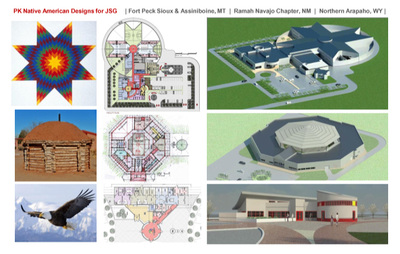
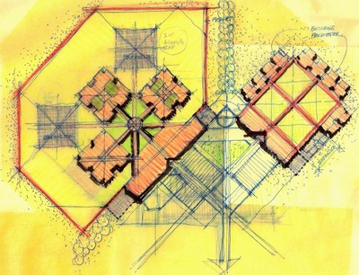

Professional Summary
Peter brings long-duration leadership in justice architecture, including facility planning, programming, operations-informed design, and stakeholder-facing delivery in high-accountability public projects.
He was elevated to Fellow of the American Institute of Architects for contributions to justice planning and design.
Experience Snapshot
42K+
Beds Designed
$2.22B+
Project Value
- Justice planning and architecture for public and institutional agencies
- Author of "Correctional Facility Design and Detailing"
- Extensive client and community presentation leadership
Representative Capabilities
Needs and Operations Assessment
Program and operational analysis to establish defensible planning direction.
Facility Planning and Programming
Scalable planning from targeted additions to large, complex justice campuses.
Design and Stakeholder Alignment
Design development support across agency, operator, and community constraints.
Post-Occupancy and Improvement Studies
Operational feedback integration for long-term facility performance.
Select Images


Contact
Email: info@maxaec.com
LinkedIn: View Profile